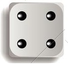
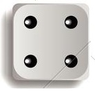

PARTE 2 – INSTRUÇÕES
A parte 2 o experimento é similar a parte 1, sendo que agora haverá um líder, escolhido aleatoriamente pelo sistema, entre os membros do mesmo grupo anteriormente formado.
O papel do líder será o de orientar as conversas no chat com os demais membros do grupo.
O líder será identificado no chat para que todos saibam quem é.
A decisão de qual número registrar será tomada em grupo.
Todos os membros do seu grupo verão o mesmo vídeo do lançamento do dado.
Sua tarefa:
O seu grupo é composto por você, outra pessoa e um líder, este escolhido aleatoriamente pelo sistema. Você deverá interagir com os membros do grupo no chat, memorizar o resultado do lançamento do dado e digitar na tela seguinte.
Seus pontos para essa tarefa:
O número do dado que você digitar, determinará o seu pagamento, por exemplo:
ATENÇÃO: Os números informados pelos outros membros do grupo não afetarão os seus pontos e o número que você informar, também não afetará os pontos dos outros participantes. Antes de informar o número, você terá a possibilidade de interagir com os demais membros do grupo.
Compreendendo a tarefa:
Suponha que você veja o número  e você digite o número “6”. Quantos pontos você irá receber, se...
Os membros do seu grupo informarem o número 6? RESPOSTA ERRADA RESPOSTA CORRETA
Pelo menos um membro do grupo informar o número 4? RESPOSTA ERRADA RESPOSTA CORRETA
O papel do líder será o de orientar as conversas no chat com os demais membros do grupo.
O líder será identificado no chat para que todos saibam quem é.
A decisão de qual número registrar será tomada em grupo.
Todos os membros do seu grupo verão o mesmo vídeo do lançamento do dado.
Sua tarefa:
O seu grupo é composto por você, outra pessoa e um líder, este escolhido aleatoriamente pelo sistema. Você deverá interagir com os membros do grupo no chat, memorizar o resultado do lançamento do dado e digitar na tela seguinte.
Seus pontos para essa tarefa:
O número do dado que você digitar, determinará o seu pagamento, por exemplo:
| NÚMERO DO DADO INSERIDO | PONTOS |
| 1 | 1 Ponto |
| 2 | 2 Pontos |
| 3 | 3 Pontos |
| 4 | 4 Pontos |
| 5 | 5 Pontos |
| 6 | 6 Pontos |
ATENÇÃO: Os números informados pelos outros membros do grupo não afetarão os seus pontos e o número que você informar, também não afetará os pontos dos outros participantes. Antes de informar o número, você terá a possibilidade de interagir com os demais membros do grupo.
Compreendendo a tarefa:
Suponha que você veja o número  e você digite o número “6”. Quantos pontos você irá receber, se...
Os membros do seu grupo informarem o número 6? RESPOSTA ERRADA RESPOSTA CORRETA
Pelo menos um membro do grupo informar o número 4? RESPOSTA ERRADA RESPOSTA CORRETA